post-impressionism: 1886-1914
intro
it officially started at the last impressionist exhibition with seurat's "dimanche d'été à la grande jatte".
characteristics- they show more than what can be perceived
- reconstruction & abstraction of reality
- perspective is often thrown out of the window
- experimenting with basically everything
i saw this in the kröller-möller museum and made a picture of it with my old nokia :D
artists & their work
seurat
short biographyhe made only a few, very large works on which he each worked a year or longer. he developed the technique of pointillism, where, if you stand far enough of the painting, the dots disappear and mix into clear colours. i'm not sure if i'm explaining it right, but look at his paintings and you'll see! he took inspiration of ancient egyptian art: (almost) always either "en profil" (side profile) or "en face" (straight).
my humble opinionhis paintings look too stiff for my liking, thought the science behind it is super cool.
his works
les baigneurs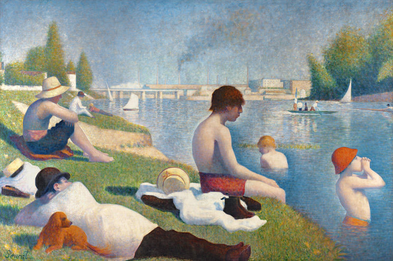 this painting shows working class people swimming and relaxing by the water. the factory in the background puts further stress on the fact that they're working class.
dimanche d'été à la grande jatte
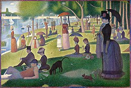 rich(er) people. lots of imagery here - the lady with the monkey is a sex worker, as "female monkey" in french that was a "nickname" (aka slur probably) for sex workers. the sides of the canvas were also painted, which you can see in the image here (the darker border)!
la parade
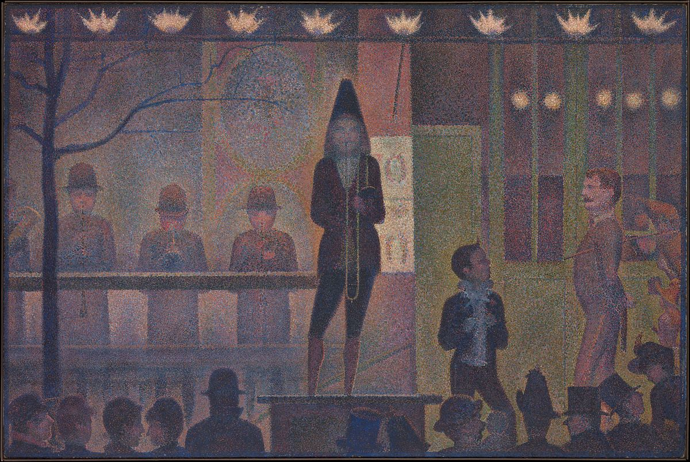 theres a literal split between regular and rich people here, look at the hats!
van gogh
short biography my humble opiniongonna be a bit blunt/vent-y here: i do not like the way people talk as if he's the greatest artist of all time. i feel like they want to be extra nice about him because he killed himself. he's not a great artist because he killed himself, he's a great artist because he developed a cool technique with colour contrasts (blue and yellow, cold and warm), used empasto, carved in the paint with the back of his pencil... the technique is just as much art as the art itself.
anyways i love his technique and works, like i look at his works and i'm like damn i want to learn how to paint
his works
self portraits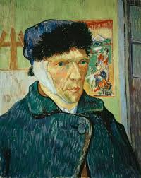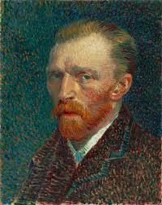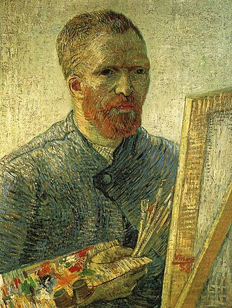 van gogh made many self portraits. in the back of the first image, you can see a reference to japanese art, which was popular in the western world at the time. i like how you can clearly see his style evolve through his self portraits!
de slaapkamer
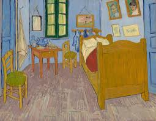 "the bedroom". perspective? never met her. the post impressionists and correct perspective were NOT a match, but i think it adds to the charm. tba
de aardappeleters
 "the potato eaters". one of his early works, made when he was still in the netherlands. his palette at the time was very dark as you can see here. he shows the mealtime of a working class dutch family.
"the potato eaters". one of his early works, made when he was still in the netherlands. his palette at the time was very dark as you can see here. he shows the mealtime of a working class dutch family.sterrennacht & sterrennacht boven de rhône
 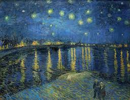
"starry night" and "starry night above the rhône". personally, i like the second version more. the colours are more vibrant and the reflection on the water is beauutiful.
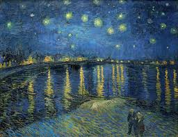
"starry night" and "starry night above the rhône". personally, i like the second version more. the colours are more vibrant and the reflection on the water is beauutiful.schoenen
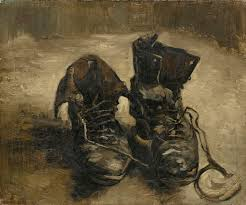 "shoes". here again a darker palette: brown paint on brown paint on brown paint. in his letters to theo van gogh he mentioned wanting to paint trash, if i remember correctly. i think this is a very pretty painting.
portret van augustine roulin (la berceuse)
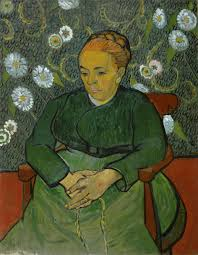 "portrait of augustine roulin"
cézanne
short biographyhe was seen as odd by his contemporaries, but his work influenced so many later styles, such as cubism!
my humble opinioni enjoy his works! they feel very chill and free.
his works
mont sainte victoire seriescompotier, verre et pommes
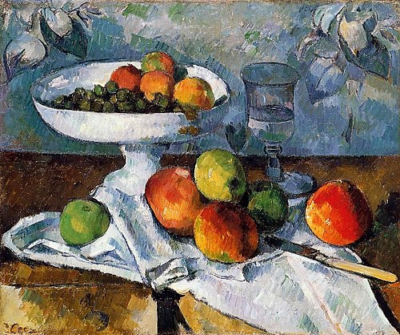 once again, say no to perspective! it seems as if the paintings are going to fall off the table.
christ in limbo
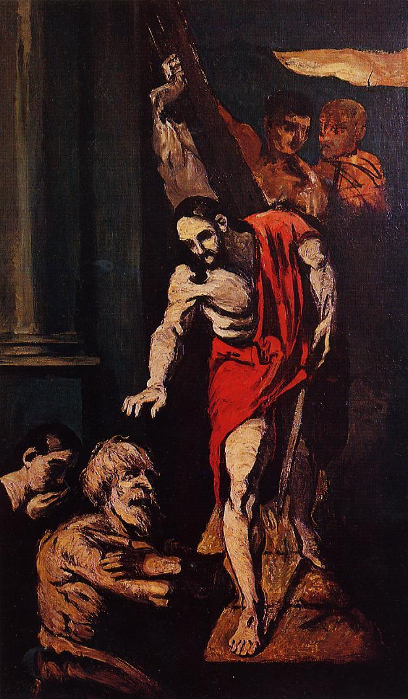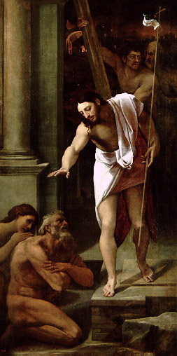 this is my favourite work of him!!! the second one is by sebastiano del piombo :) it might just be a study, but i love the light-dark contrast immensely.
gauguin is also a postimpressionist. look him up on wikipedia or whatever, he's pretty famous so you'll find loads of sources. i will not be talking about him.